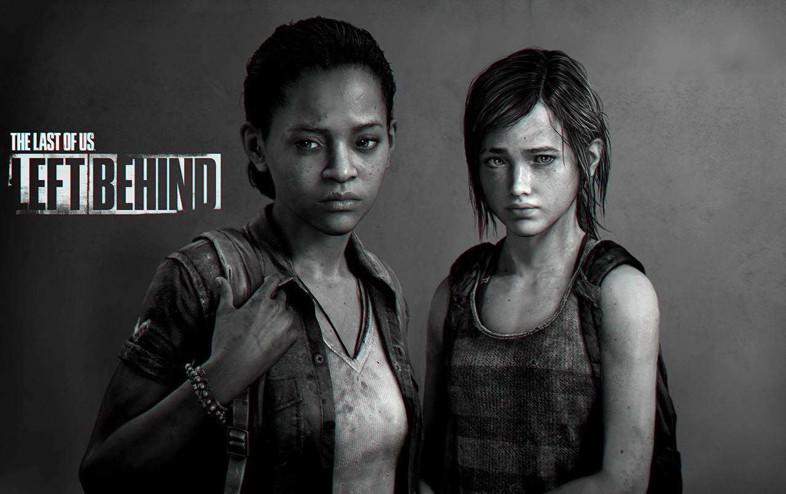

Juegos de la saga

The Last Of Us

The Last Of Us 2
Left Behind

The Last Of Us remastered
The Last of Us es una saga de videojuegos creada por Sony, con títulos en nuestra base de datos desde 2013 y que actualmente cuenta con un total de 4 juegos para PS4, PS3.
Trailers de los juegos
Rumor acerca de una tecera entrega
Es que el recurrente portal Oops Leaks, que ya se anticipó en el pasado a varios eventos relevantes del rubro, aseguró que una fuente directa del estudio les confirmó que la base del guion para esta nueva entrega ya está lista: ”Nada más que declaraciones oficiales del estudio, el esquema del guión está listo, pero el estudio está absorto en el desarrollo de los proyectos antes mencionados. Es posible que el desarrollo comience más rápido de lo esperado debido a la expansión del estudio”.
Siempre hay que tomar este tipo de información con pinzas pero lo cierto es que el solo hecho de pensar en The Last of Us 3 hace que las ilusiones lleguen al cielo. Veremos cuánto tendremos que esperar para verlo.
Nunca esta de mas menciona la serie que esta realizando HBO respecto al juego
Tratándose The Last of Us de uno de los mejores videojuegos que hemos probado, es lógico que la serie que está preparando HBO se haya convertido en una de las más esperadas por todos los que conocemos su historia y sus personajes. La información de que disponemos sobre esta producción va apareciendo con cuentagotas. Así que aqui les dejamos el trailer para que le hechen un vistazo.